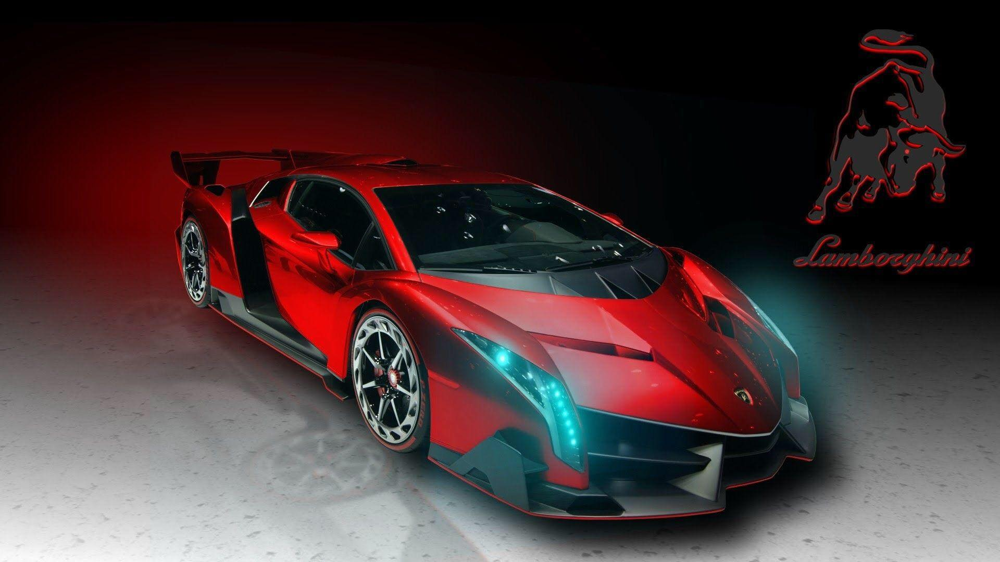

Asphalt 9 Legends is a 2018 racing video game developed by Gameloft Barcelona and published by Gameloft. Released on July 25, 2018, it's the fifteenth major game of Asphalt series. In comparison to previous entries, there are several new and improved features, such as a prestigious car lineup, new control schemes, including the autopilot mode called "TouchDrive", and race modes, and the reimplemented "shockwave nitro" from Asphalt 6: Adrenaline. The graphics are considered significantly improved compared to its 2013 predecessor, Asphalt 8: Airborne.